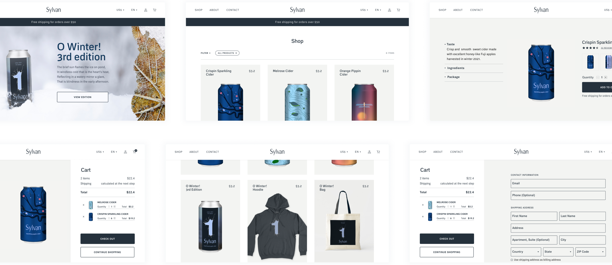
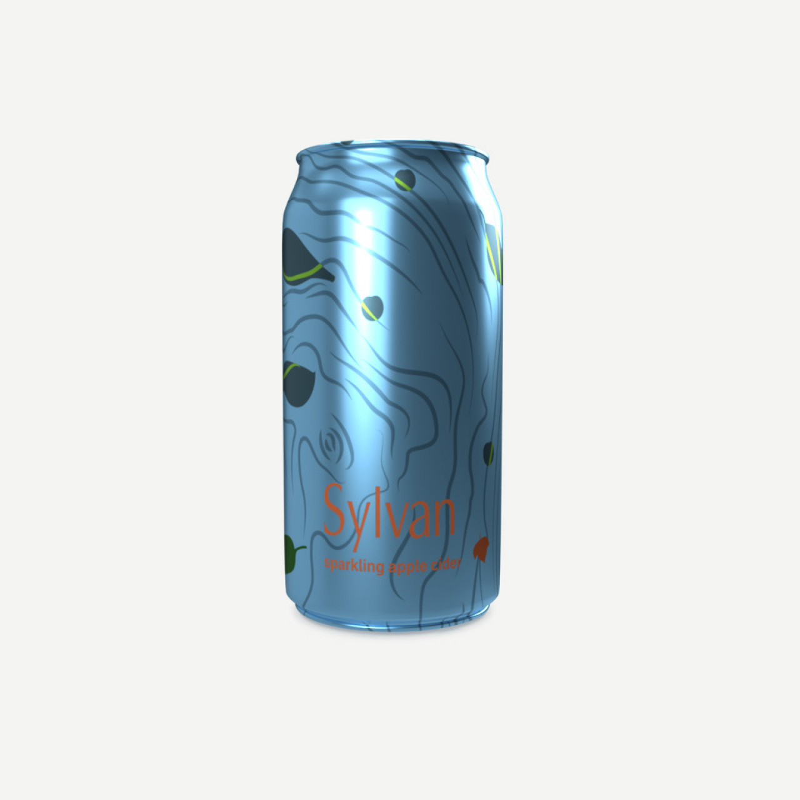

Sylvan
Ecommerce website

Overview
Sylvan is an organic apple cider brand where genuine craftsmanship plays an important role and seasonality can be experienced in all stages, starting from harvesting fruit up to canning beverage.
My role
- Branding
- Packaging design
- User Research
- Information Architecture
- Wireframing
- Prototyping
Timeline
- Nov 2020
Tags
- mobile app design
- 2021
Master Brand Logo


Packaging
Three packaging designs as well as a special annual edition celebrate three main apple harvests of the year: an early-season harvest, a mid-season harvest, and a late-season harvest.




Besides a pack of twelve ciders of mixed apple varieties the special annual edition includes a hoodie and tote bag.


Conclusion
The biggest challenge of this app was its data-heavy content. In the beginning, I didn't know how to reveal the data gradually: from a broad overview to the finest details, so that a user won't get too overwhelmed with it. After several iterations, I managed to create quite a minimalist layout without sacrificing the user experience.
Another thing to consider was how to make the process of cooking more enjoyable and easy for a user. After all, for many users who are used to eat meat changing their eating habits can be hard and sometimes even cause frustration. That's why apart from shooting a video for the recipe, I decided to design a visual list of ingredients.